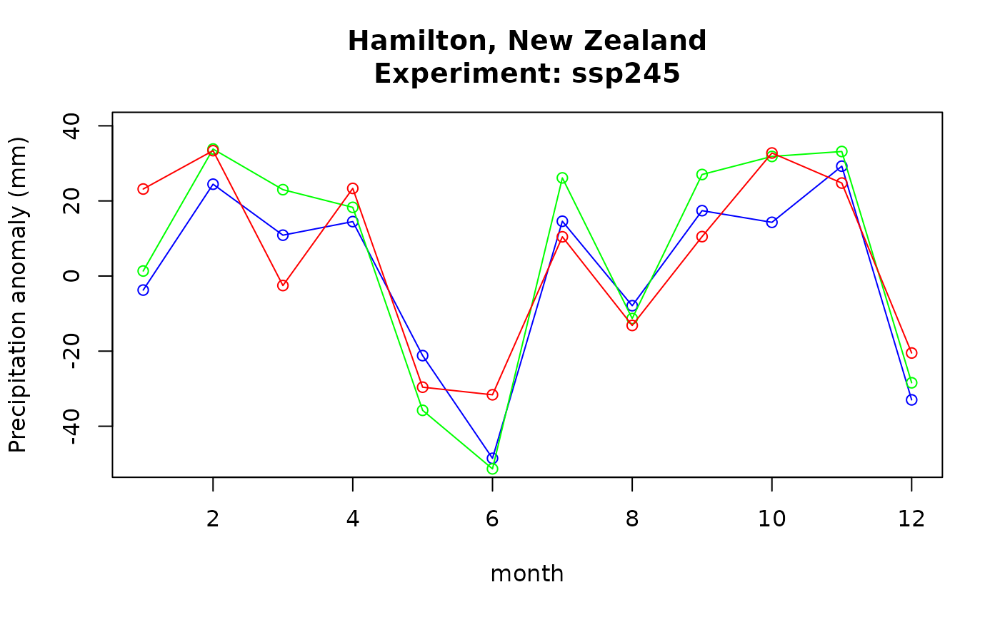

Climate projection data sets are produced in a variety of formats but all conform to the CF Metadata Conventions. NetCDF data files, in particular, are highly structured and relatively easy to process. That said, it is very important to maintain a proper processing workflow such that the small changes in the climate projections are maintained and revealed through analysis. In this document, the basic workflow with varying calendars is described.
In this vignette we are using the
ncdfCFpackage as that provides the easiest interface to work with netCDF files. PackageCFtimeis integrated intoncdfCFwhich makes working with time dimensions in netCDF seamless.
PackagesRNetCDFandncdf4can work withCFtimeas well but then the “intelligence” built intoncdfCFis not available, such as automatically identifying axes and data orientation. Other packages liketerraandstarsare not recommended because they do not provide access to the specifics of the time dimension of the data and do not consider any calendars other than “proleptic_gregorian”.
Processing climate projection data
Individual files containing climate projections contain global, regional or local data, typically on a rectangular latitude-longitude grid, for a single parameter such as “near-surface temperature”, and for a number of time steps. An analysis workflow then consists of a number of steps:
- Download the appropriate data files for your desired combination of model, experiment, realization, geography, time range, parameter, … (called a “data suite” henceforth). If your analysis involves multiple parameters (such as temperature and precipitation to estimate crop productivity), repeat the process for all parameters. If you want to make a multi-model ensemble to reduce model bias, repeat again for all desired model, experiment and realization combinations (“ensemble member”). You end up having one or more data suites to work with.
- Take all files in a data suite and extract the data. Process the
data in the data suite. Since the data are (mostly) 3-dimensional
arrays, this will involve binding the arrays on the right dimension and
then do something like
apply(data, 1:2, tapply, f, fun)(following the CF Metadata Conventions, dimensions 1 and 2 are “longitude” and “latitude”, respectively; the third dimension is “time”; none of this is standardized though and deviations are out there; packagencdfCFcan help with theCFVariable$array()method). Repeat for the data suite for each ensemble member. - Combine the above results as your workflow requires. Frequently this involves computing “anomalies”: ratio the data for one or more future periods to a baseline period. Repeat for each ensemble member.
- Construct the multi-model ensemble from the individual ensemble members.
Apart from the first step of obtaining the data, the steps lend
themselves well to automation. The catch, however, is in the factor
f to use with tapply(). The different models
(in your ensemble) use different calendars, meaning that different
factors are required. The CFtime package can help out.
The CFTime$factor() method produces a factor that
respects the calendar of the data files. The method comes in two
operating modes:
- Plain vanilla mode produces a factor for a time period across the entire time series. The factor level includes the year. This would be useful to calculate mean temperature for every month in every year, for instance.
- When one or more “eras” (periods of interest) are provided, the factor level no longer includes the year and can be used to calculate, for instance, the mean temperature per period of interest in the era (e.g. average March temperature in the era 2041-2060).
# Setting up
library(ncdfCF)
fn <- list.files(path = system.file("extdata", package = "CFtime"), full.names = TRUE)[1]
(ds <- ncdfCF::open_ncdf(fn))
#> <Dataset> pr_day_GFDL-ESM4_ssp245_r1i1p1f1_gr1_20150101-20991231_v20180701
#> Resource : /home/runner/work/_temp/Library/CFtime/extdata/pr_day_GFDL-ESM4_ssp245_r1i1p1f1_gr1_20150101-20991231_v20180701.nc
#> Format : netcdf4
#> Collection : CMIP6
#> Conventions: CF-1.7 CMIP-6.0 UGRID-1.0
#> Has groups : FALSE
#>
#> Variable:
#> name long_name units data_type axes
#> pr Precipitation kg m-2 s-1 NC_FLOAT lon, lat, time
#>
#> External variable: areacella
#>
#> Attributes:
#> name type length
#> external_variables NC_CHAR 9
#> history NC_CHAR 124
#> table_id NC_CHAR 3
#> activity_id NC_CHAR 11
#> branch_method NC_CHAR 8
#> branch_time_in_child NC_DOUBLE 1
#> branch_time_in_parent NC_DOUBLE 1
#> comment NC_CHAR 10
#> contact NC_CHAR 32
#> Conventions NC_CHAR 25
#> creation_date NC_CHAR 20
#> data_specs_version NC_CHAR 8
#> experiment NC_CHAR 30
#> experiment_id NC_CHAR 6
#> forcing_index NC_INT 1
#> frequency NC_CHAR 3
#> further_info_url NC_CHAR 77
#> grid NC_CHAR 94
#> grid_label NC_CHAR 3
#> initialization_index NC_INT 1
#> institution NC_CHAR 112
#> institution_id NC_CHAR 9
#> license NC_CHAR 805
#> mip_era NC_CHAR 5
#> nominal_resolution NC_CHAR 6
#> parent_activity_id NC_CHAR 4
#> parent_experiment_id NC_CHAR 10
#> parent_mip_era NC_CHAR 5
#> parent_source_id NC_CHAR 9
#> parent_time_units NC_CHAR 19
#> parent_variant_label NC_CHAR 8
#> physics_index NC_INT 1
#> product NC_CHAR 12
#> realization_index NC_INT 1
#> realm NC_CHAR 5
#> source NC_CHAR 560
#> source_id NC_CHAR 9
#> source_type NC_CHAR 18
#> sub_experiment NC_CHAR 4
#> sub_experiment_id NC_CHAR 4
#> title NC_CHAR 82
#> tracking_id NC_CHAR 49
#> variable_id NC_CHAR 2
#> variant_info NC_CHAR 3
#> references NC_CHAR 30
#> variant_label NC_CHAR 8
#> value
#> areacella
#> File was processed by fremetar (GFDL analog of ...
#> day
#> ScenarioMIP
#> standard
#> 60225
#> 60225
#> <null ref>
#> gfdl.climate.model.info@noaa.gov
#> CF-1.7 CMIP-6.0 UGRID-1.0
#> 2019-06-18T05:29:00Z
#> 01.00.27
#> update of RCP4.5 based on SSP2
#> ssp245
#> 1
#> day
#> https://furtherinfo.es-doc.org/CMIP6.NOAA-GFDL....
#> atmos data regridded from Cubed-sphere (c96) to...
#> gr1
#> 1
#> National Oceanic and Atmospheric Administration...
#> NOAA-GFDL
#> CMIP6 model data produced by NOAA-GFDL is licen...
#> CMIP6
#> 100 km
#> CMIP
#> historical
#> CMIP6
#> GFDL-ESM4
#> days since 1850-1-1
#> r1i1p1f1
#> 1
#> model-output
#> 1
#> atmos
#> GFDL-ESM4 (2018):\natmos: GFDL-AM4.1 (Cubed-sphe...
#> GFDL-ESM4
#> AOGCM AER CHEM BGC
#> none
#> none
#> NOAA GFDL GFDL-ESM4 model output prepared for C...
#> hdl:21.14100/48767401-8960-4864-8738-e64640bef71d
#> pr
#> N/A
#> see further_info_url attribute
#> r1i1p1f1
# The T axis, with name "time" has a CFTime instance
t <- ds[["time"]]$time
# Create monthly factors for a baseline era and early, mid and late 21st century eras
baseline <- t$factor(era = 1991:2020)
future <- t$factor(era = list(early = 2021:2040, mid = 2041:2060, late = 2061:2080))
str(baseline)
#> Factor w/ 12 levels "01","02","03",..: 1 1 1 1 1 1 1 1 1 1 ...
#> - attr(*, "era")= int 30
#> - attr(*, "period")= chr "month"
#> - attr(*, "CFTime")=CFClimatology with origin [days since 1850-01-01] using calendar [noleap] having 12 offset values
str(future)
#> List of 3
#> $ early: Factor w/ 12 levels "01","02","03",..: NA NA NA NA NA NA NA NA NA NA ...
#> ..- attr(*, "era")= int 20
#> ..- attr(*, "period")= chr "month"
#> ..- attr(*, "CFTime")=CFClimatology with origin [days since 1850-01-01] using calendar [noleap] having 12 offset values $ mid : Factor w/ 12 levels "01","02","03",..: NA NA NA NA NA NA NA NA NA NA ...
#> ..- attr(*, "era")= int 20
#> ..- attr(*, "period")= chr "month"
#> ..- attr(*, "CFTime")=CFClimatology with origin [days since 1850-01-01] using calendar [noleap] having 12 offset values $ late : Factor w/ 12 levels "01","02","03",..: NA NA NA NA NA NA NA NA NA NA ...
#> ..- attr(*, "era")= int 20
#> ..- attr(*, "period")= chr "month"
#> ..- attr(*, "CFTime")=CFClimatology with origin [days since 1850-01-01] using calendar [noleap] having 12 offset valuesBuilding on the examples above of opening a file, creating a
CFTime instance and a suitable factor for one data suite,
here daily rainfall, the actual processing of the data into
precipitation anomalies for 3 periods relative to a baseline period
could look like this:
# Get the data for the "pr" data variable from the netCDF data set.
# The `CFVariable$array()` method ensures that data are in standard R orientation.
# Converts units of kg m-2 s-1 to mm/day.
pr <- ds[["pr"]]$array() * 86400
# Get a global attribute from the file
experiment <- ds$attribute("experiment_id")
# Calculate the daily average precipitation per month for the baseline period
# and the three future eras.
pr_base <- apply(pr, 1:2, tapply, baseline, mean) # an array
pr_future <- lapply(future, function(f) apply(pr, 1:2, tapply, f, mean)) # a list of arrays
# Calculate the precipitation anomalies for the future eras against the baseline.
# Working with daily averages per month so we can simply subtract and then multiply by days
# per month for each of the factor levels using the CF calendar.
ano <- mapply(function(pr, f) {(pr - pr_base) * t$factor_units(f)}, pr_future, future, SIMPLIFY = FALSE)
# Plot the results
plot(1:12, ano$early[,1,1], type = "o", col = "blue", ylim = c(-50, 40), xlim = c(1, 12),
main = paste0("Hamilton, New Zealand\nExperiment: ", experiment),
xlab = "month", ylab = "Precipitation anomaly (mm)")
lines(1:12, ano$mid[,1,1], type = "o", col = "green")
lines(1:12, ano$late[,1,1], type = "o", col = "red")
Looks like Hadley will be needing rubber boots in spring and autumn back home!
The interesting feature, working from opening the netCDF file down to
plotting, is that the specifics of the CF calendar that the data suite
uses do not have to be considered anywhere in the processing workflow:
the CFtime package provides the functionality. Data suites
using another CF calendar are processed exactly the same.
Combining data from different models with different calendars
Different climate projection data sets can use different calendars. It is absolutely essential to respect the calendar of the different data sets because the underlying solar and atmospheric physics are based on those calendars as well.
In a typical situation, a researcher would construct a multi-model
ensemble to remove or reduce the bias in any given model. The data sets
composing the ensemble might well use different calendars. The correct
way of constructing an ensemble is to perform the desired analysis on
every ensemble member individually and to combine them only in the final
step and to then perform any ensemble operations such as computing
confidence intervals. The design of the CFtime package
makes it easy to do this, through its heavy use of lists. Building on
the previous example, let’s make a multi-model ensemble of 2 models (not
much of an ensemble but such are the limitations of including data with
packages - the example easily extends to a larger set of ensemble
members).
# Get the list of files that make up the ensemble members, here:
# GFDL ESM4 and MRI ESM2 models for experiment SSP2-4.5, precipitation, CMIP6 2015-01-01 to 2099-12-31
lf <- list.files(path = system.file("extdata", package = "CFtime"), full.names = TRUE)
# Loop over the files individually
# ano is here a list with each element holding the results for a single model
ano <- lapply(lf, function(fn) {
ds <- ncdfCF::open_ncdf(fn)
t <- ds[["time"]]$time
pr <- ds[["pr"]]$array() * 86400
baseline <- t$factor(era = 1991:2020)
pr_base <- apply(pr, 1:2, tapply, baseline, mean)
future <- t$factor(era = list(early = 2021:2040, mid = 2041:2060, late = 2061:2080))
pr_future <- lapply(future, function(f) apply(pr, 1:2, tapply, f, mean))
mapply(function(pr, f) {(pr - pr_base) * t$factor_units(f)}, pr_future, future, SIMPLIFY = FALSE)
})
# Era names
eras <- c("early", "mid", "late")
dim(eras) <- 3
# Build the ensemble for each era
# For each era, grab the data for each of the ensemble members, simplify to an array
# and take the mean per row (months, in this case)
ensemble <- apply(eras, 1, function(e) {
rowMeans(sapply(ano, function(a) a[[e]], simplify = TRUE))})
colnames(ensemble) <- eras
rownames(ensemble) <- rownames(ano[[1]][[1]])
ensemble
#> early mid late
#> 01 -22.901333 -15.2675652 -1.6380748
#> 02 -25.430060 -21.4016013 -15.3427744
#> 03 -21.895792 -14.7434749 -22.4187823
#> 04 6.763958 6.9498244 15.2008249
#> 05 -2.635598 -15.3054439 -17.0106058
#> 06 -43.152012 -47.3442148 -32.1797467
#> 07 1.072942 10.4940924 3.9473240
#> 08 4.124084 -6.0917940 -12.9178847
#> 09 9.231852 -0.2038321 2.7198366
#> 10 5.148302 10.3044202 12.0060866
#> 11 16.186108 25.9156463 8.2168498
#> 12 -3.211510 -0.2036319 0.7604947Here we simply compute the average of the monthly precipitation anomaly over the ensemble members. In a more typical scenario, you would use the values from the individual models and to apply a more suitable analysis, such as calculating the confidence interval or model agreement.
One significant advantage of this processing workflow is that it is
easily parallelized: the bulk of the work goes into computing the
anomalies, ano, and this is embarrassingly
parallel because they read their own data and produce independent
outputs. Use package
future or something similar to easily make the code run on all
available CPU cores.
Working with multiple files in a single data suite
Due to the large size of typical climate projection data files, it is common to have a data suite that is contained in multiple files. A case in point is the CORDEX data set which breaks up the experiment period of 2006 - 2100 into 19 files of 5 years each, with each file covering a single parameter (temperature, precipitation, etc) over an entire domain (such as Europe, South Asia, Central America and the Caribbean, etc). The CFtime package can streamline processing of such multi-file data suites as well.
Assuming that you have your CORDEX files in a directory on disk,
organized by domain and other properties such as the variable, GCM/RCM
combination, experiment, etc, the process of preparing the files for
processing could be encoded in a function as below. The argument
fn is a list of file names to process, and var
is the variable contained in the files. (There are no checks on argument
sanity here, which should really be included. This function only makes
sense for a single [domain, GCM/RCM, experiment, variable] combination.
Also be aware of data size, CORDEX files are huge and stitching all
domain data together will easily exhaust available memory and it may
thus lead to very large swap files and very poor performance - use the
ncdfCF::CFVariable$subset() method to read spatial or
temporal chunks of data to avoid such problems.)
library(ncdfCF)
library(abind)
prepare_CORDEX <- function(fn, var, aoi) {
data <- vector("list", length(fn))
for (i in 1:length(fn)) {
ds <- ncdfCF::open_ncdf(fn[i])
if (i == 1) {
# Get a CFTime instance from the first file
t <- ds[["time"]]$time
} else {
# Add offsets from the file and add to the CFTime instance
t <- t + ds[["time"]]$time$offsets
}
# Put the subsetted data array in the list
data[[i]] <- ds[[var]]$subset(aoi = aoi)$array()
}
# Create a list for output with the CFTime instance and
# the data bound in a single 3-dimensional array
list(CFTime = t, data = abind(data, along = 3))
}Calling this function like
prepare_CORDEX(list.files(path = "~/CC/CORDEX/CAM", pattern = "^pr.*\\.nc$", full.names = TRUE), "pr", ncdfCF::aoi(0, 20, 30, 50))
will yield a list of netCDF files with precipitation data, with the
resulting CFTime instance describing the full temporal
extent covered by the data files, as well as the data bound on the
temporal dimension, ready for further processing.
When working like this it is imperative that the offsets and the data
arrays are added to their final structures in exactly the same
order. It is not necessary that the offsets (and the data)
themselves are in order, but the correspondence between offsets and data
needs to be maintained. (list.files() produces a list in
alphabetical order by default, which for most climate projection files
produces offsets in chronological order.)
Acknowledgements
The results presented contain modified data from Copernicus Climate Change Service information, 2023-2025. Neither the European Commission nor ECMWF is responsible for any use that may be made of the Copernicus information or data it contains.
We acknowledge the World Climate Research Programme, which, through its Working Group on Coupled Modelling, coordinated and promoted CMIP6. We thank the climate modeling groups for producing and making available their model output, the Earth System Grid Federation (ESGF) for archiving the data and providing access, and the multiple funding agencies who support CMIP6 and ESGF.
The two data sets used as examples in this vignette carry the following license statements:
- pr_day_GFDL-ESM4_ssp245_r1i1p1f1_gr1_20150101-20991231_v20180701.nc: CMIP6 model data produced by NOAA-GFDL is licensed under a Creative Commons Attribution-ShareAlike 4.0 International License (https://creativecommons.org/licenses/). Consult (dead link to pcmdi dot llnl dot gov/CMIP6/TermsOfUse/) for terms of use governing CMIP6 output, including citation requirements and proper acknowledgment. Further information about this data, including some limitations, can be found via the further_info_url (recorded as a global attribute in this file). The data producers and data providers make no warranty, either express or implied, including, but not limited to, warranties of merchantability and fitness for a particular purpose. All liabilities arising from the supply of the information (including any liability arising in negligence) are excluded to the fullest extent permitted by law.
- pr_day_MRI-ESM2-0_ssp245_r1i1p1f1_gn_20150101-20991231_v20190603.nc: CMIP6 model data produced by MRI is licensed under a Creative Commons Attribution-ShareAlike 4.0 International License (https://creativecommons.org/licenses/). Consult (dead link to pcmdi dot llnl dot gov/CMIP6/TermsOfUse/) for terms of use governing CMIP6 output, including citation requirements and proper acknowledgment. Further information about this data, including some limitations, can be found via the further_info_url (recorded as a global attribute in this file). The data producers and data providers make no warranty, either express or implied, including, but not limited to, warranties of merchantability and fitness for a particular purpose. All liabilities arising from the supply of the information (including any liability arising in negligence) are excluded to the fullest extent permitted by law.